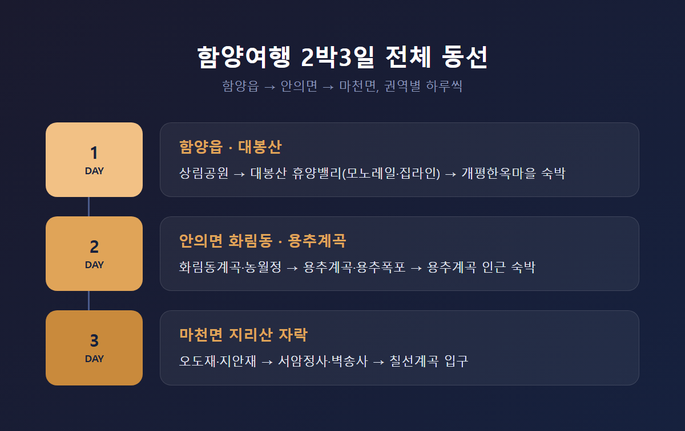
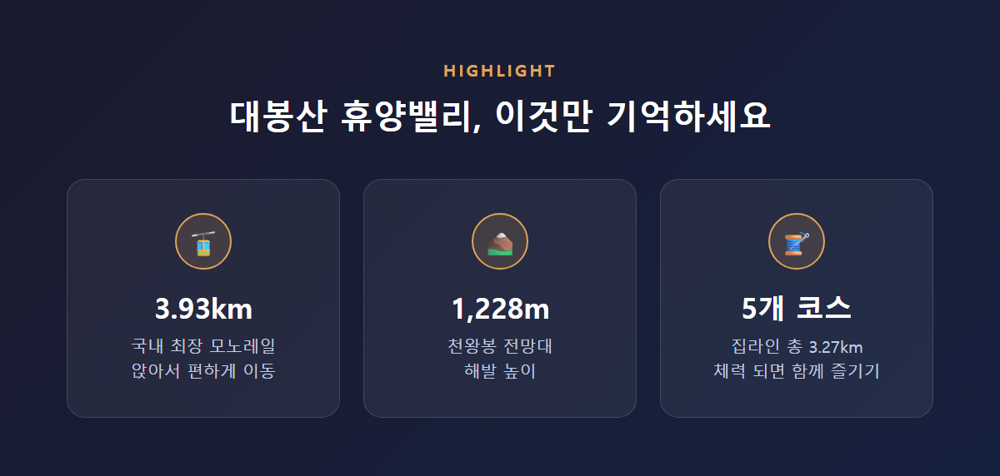
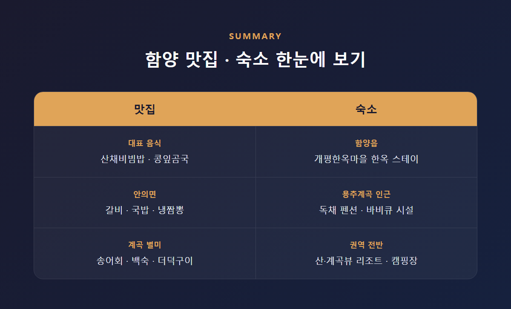

솔직히 말씀드리면, 함양이라는 지명을 듣고 처음 떠올린 이미지는 "그냥 지리산 근처 조용한 시골 동네" 정도였습니다. 그런데 막상 코스를 짜고 다녀와 보니, 함양여행은 하루 이틀로는 절대 다 못 볼 만큼 권역이 넓고 결이 다른 곳들로 나뉘어 있었는데요.
먼저 결론부터 말씀드리겠습니다. 함양여행 2박3일 코스를 짤 때 가장 중요한 것은 하루에 이것저것 욕심내지 않고, 권역별로 하루씩 배정하는 동선입니다. 함양읍의 인문·정원 관광, 안의면의 계곡·정자 관광, 마천면의 사찰·계곡·전망 관광이 서로 방향이 달라서, 이걸 하루에 몰아넣으면 이동만 하다가 하루가 끝나 버리기 때문입니다.
그래서 이 글에서는 제가 실제로 다녀온 순서를 바탕으로, 함양 2박3일 코스를 1일차 함양읍·대봉산, 2일차 안의면 화림동·용추계곡, 3일차 마천면 지리산 자락으로 나눠서 정리해 보겠습니다.
목차 — 코스 짜는 법 → 1일차 함양읍·대봉산 → 2일차 안의면 화림동·용추계곡 → 3일차 마천면 지리산 자락 → 맛집과 숙소 → 가는 법 → 솔직히 아쉬웠던 점
함양은 크게 네 개의 축으로 나눠서 이해하면 편합니다. 함양읍 중심의 인문·정원 관광(상림공원, 개평한옥마을, 남계서원), 안의면의 계곡·정자 관광(화림동계곡, 용추계곡), 마천면의 사찰·계곡·전망 관광(서암정사, 벽송사, 칠선계곡, 오도재), 그리고 체험형 관광인 대봉산 휴양밸리입니다.
지리적으로 보면 함양읍과 안의면은 서쪽에, 마천면은 지리산 방향인 동쪽에 있는데요. 그래서 하루 안에 두 권역을 무리하게 오가기보다는, 권역별로 하루씩 배정하는 편이 훨씬 여유롭습니다. 저도 처음엔 "그냥 하루에 다 돌면 되지 않을까"라고 생각했는데, 실제로 지도를 놓고 동선을 짜보니 그게 아니더군요.
계절에 따라 순서를 바꿀 수도 있습니다. 여름철이라면 계곡 피서가 성수기인 안의면 일정을 먼저 배치해서 더위를 피하는 방식도 많이 쓰인다고 하니, 방문 시기에 맞춰 순서를 조정하시면 됩니다.

첫날은 함양읍에서 시작했습니다. 오전에는 상림공원을 걸었는데요. 통일신라 시대 최치원이 함양 태수로 있을 때 홍수 피해를 막기 위해 조성한, 국내에서 가장 오래된 인공림이라고 합니다. 연중무휴 24시간 무료로 개방되어 있어서 부담 없이 들를 수 있는 곳입니다.
계절마다 볼거리가 다르다고 하는데, 봄에는 신록과 함께 5월 중순~하순 꽃양귀비가 절정을 이루고, 가을에는 단풍과 황화코스모스·꽃무릇이 어우러진다고 합니다. 여름에는 짙은 그늘이 도심 속 피서지 역할을 해주는데요. 걷는 내내 갈참나무, 졸참나무, 산수유나무 같은 다양한 수종이 숲을 이루고 있어서, 숲 하나를 통째로 품은 듯한 느낌을 받았습니다.
점심은 상림공원 인근에서 면요리로 가볍게 해결하고, 오후에는 대봉산 휴양밸리로 이동했습니다. 국내 최장 3.93km 길이의 모노레일을 타고 해발 1,228m 천왕봉 전망대까지 앉아서 편하게 올라갈 수 있는데, 어르신이나 아이를 동반한 여행객에게도 무리가 없는 코스였습니다. 시간과 체력이 된다면 5개 코스, 총 3.27km 규모의 집라인도 함께 즐길 수 있습니다. 다만 모노레일과 집라인 요금·예약 정보는 시즌별로 달라질 수 있어서, 함양군 대봉산휴양밸리 공식 페이지에서 미리 확인하시는 걸 권해 드립니다.
저녁에는 개평한옥마을 인근에서 숙박했습니다. 이 마을은 함양의 오랜 선비문화를 간직한 전통 한옥마을로, 문화체험휴양마을로 지정되어 있는데요. 마을에서 가장 높은 지대에 자리한 '지리산 태고재'는 500년 역사를 지닌 한옥이라, 마을 전경을 내려다보며 하루를 마무리하기 좋았습니다. 근처 남계서원은 조선시대 유학자 정여창 선생을 기려 세운 서원으로, 시간이 남으면 가볍게 야간 산책 코스로 묶기 좋습니다.

둘째 날은 개평한옥마을과 남계서원을 다시 한 번 둘러본 뒤, 안의면으로 이동했습니다. 국도로 20~30분대면 닿는 거리라 크게 부담스럽지 않았는데요.
안의면에서 처음 마주한 곳은 화림동계곡이었습니다. 남덕유산에서 발원한 금천이 굽이쳐 흐르며 '8담 8정'을 이룬다는 이 계곡은, 조선시대 시인과 묵객들이 즐겨 찾던 풍류 여행지였다고 합니다. 계곡 한가운데 자리한 농월정이 특히 인상 깊었는데요. 조선 중기 지족당 박명부 선생이 낙향 후 지은 정자로, '달을 희롱하며 논다'는 뜻을 담고 있습니다. 2003년 방화로 소실되었다가 2015년에 복원된 정면 3칸, 측면 2칸의 2층 목조 누각인데, 자연 암반 위에 세워진 모습을 보고 있으면 왜 옛 선비들이 이곳에서 시를 읊었는지 알 것 같았습니다. 주변 거연정, 동호정 같은 다른 정자들도 함께 둘러보면 좋습니다.
점심은 안의면 로컬 맛집에서 갈비와 냉짬뽕을 먹었습니다. 뷰가 좋은 식당들도 여럿 소개되어 있어서, 계곡 풍경을 보며 식사하기에 부족함이 없었습니다.
오후에는 용추계곡과 용추자연휴양림으로 이동했습니다. 함양군립공원 제1호 기백산 자락에 자리한 이 계곡은 길이 약 8km에 물살이 힘차고 숲그늘이 짙어서, 여름 피서지로 인기가 많다고 합니다. 지우천 상류에서 쏟아지는 높이 약 15m의 용추폭포가 계곡의 중심 경관이었고, 학문을 닦던 자리에 후손들이 세웠다는 심원정, 보물로 지정된 용추사 일주문도 계곡길에서 만날 수 있었습니다. 입장료 없이 상시 개방되지만, 비가 온 뒤에는 물살이 세질 수 있어 현장 상황을 먼저 확인하시는 게 안전합니다.
저녁은 용추계곡 인근에서 송어회와 백숙, 더덕구이로 마무리했습니다. 숙박은 용추계곡 인근 펜션을 이용했는데, 계곡이 펜션 앞을 흐르고 전 객실이 독채인 데다 개별 바비큐 시설까지 갖춰져 있어서, 여름철 물놀이형 숙박으로는 꽤 만족스러웠습니다.
셋째 날은 오도재로 향했습니다. 삼봉산과 법화산 사이 능선에 자리한 이 고개는, 함양에서 칠선계곡·백무동계곡·지리산 쪽으로 가려면 반드시 넘어야 하는 길입니다. '오도(悟道)'라는 이름 그대로 '도를 깨우치다'라는 뜻을 담고 있는데요. 잿마루에 서 있는 '지리산제일문' 아래 전망대에서는 해발 700~770m 높이에서 지리산 주요 봉우리를 파노라마로 볼 수 있었습니다. 오도재로 오르는 길에 만나는 지안재의 S자 드라이브 코스도 그 자체로 볼거리라, 국토부도 인정한 명소라는 말이 과장은 아니었습니다.
이어서 서암정사와 벽송사를 둘러봤습니다. 서암정사는 한국전쟁으로 소실된 벽송사를 재건한 원응스님이 약 10년에 걸쳐 자연 암반에 무수한 불상을 새겨 조성한 곳으로, 칠선계곡 입구 지리산 자락에 자리하고 있습니다. 바로 옆 벽송사는 한국전쟁 당시 빨치산의 야전병원으로 쓰이다 완전히 소실되어, 지금은 삼층석탑만 남아 있는 역사 사찰인데요. 두 곳을 나란히 보고 있으면, 같은 지리산 자락에서도 완전히 다른 결의 이야기가 겹쳐 있다는 게 느껴집니다.
시간이 남는다면 칠선계곡 입구까지 걸어 들어가 보는 것도 좋습니다. 국내 3대 계곡으로 꼽힐 만큼 웅장하다고 소개되는 곳인데, 본격적인 계곡 트레킹은 시간과 체력이 꽤 필요하다고 해서 저는 입구 산책 정도로 만족했습니다. 2박3일 일정이라면 무리한 등반보다는 이 편이 현실적인 선택이라고 생각합니다.
점심은 마천면 인근에서 산채정식으로 가볍게 먹고 귀갓길에 올랐습니다.
함양여행에서 빼놓을 수 없는 게 먹거리입니다. 함양 대표 음식으로는 맑은 공기 속에서 자란 산나물이 듬뿍 들어간 산채비빔밥을 꼽을 수 있고, 다른 지역에서는 접하기 어려운 콩잎곰국도 경상도식 보양식으로 알려져 있습니다. 안의면 쪽으로 가면 갈비, 국밥, 냉짬뽕 같은 로컬 맛집이 몰려 있고, 계곡 인근에서는 송어회, 백숙, 더덕구이 같은 별미를 즐길 수 있습니다. 오리고기를 계곡 뷰와 함께 즐길 수 있는 식당도 소개되어 있고, 상림공원 근처에서는 면요리를 가볍게 먹기 좋습니다. 시간이 맞는다면 함양 오일장에 들러 로컬 먹거리를 구경하는 것도 여행의 재미를 더해줍니다.
숙소는 권역별로 성격이 다릅니다. 개평한옥마을에는 '지리산 태고재' 같은 한옥 스테이가 있어 전통적인 분위기를 원하는 분께 어울리고, 용추계곡 인근 펜션은 계곡 뷰와 독채·바비큐 시설을 갖춰 여름철 물놀이형 여행에 잘 맞습니다. 함양읍과 안의면, 마천면 전반에 걸쳐 산·계곡 뷰 리조트와 펜션, 캠핑장이 고루 분포되어 있는 편입니다. 다만 구체적인 숙박 가격은 시즌과 예약 플랫폼에 따라 차이가 커서, 야놀자·아고다·에어비앤비 같은 플랫폼에서 여행 시점에 맞춰 직접 확인하시는 걸 권해 드립니다.

함양에는 KTX나 SRT 같은 철도가 직접 연결되지 않습니다. 그래서 시외버스나 자가용이 현실적인 선택인데요. 함양시외버스터미널 기준으로 전국 약 57개 노선이 연결되어 있고, 동서울종합터미널에서는 하루 약 12회, 서울 남부터미널에서는 첫차 오전 10시 10분부터 막차 밤 10시까지 우등·심야 노선이 운행됩니다. 인천에서도 하루 약 4회, 약 4시간 5분 정도 걸려 갈 수 있습니다. 예매는 시외버스 통합예매시스템이나 티머니GO 앱을 이용하면 됩니다.
자가용을 이용한다면 광주-대구고속도로의 지리산IC나 함양IC를 타고 마천면 서암정사·벽송사 방면까지 약 30분 안에 이동할 수 있습니다. 다만 함양읍, 안의면, 마천면 사이를 대중교통만으로 오가기는 번거로운 편이라, 함양여행 2박3일 코스를 짤 때는 자가용이나 렌터카를 이용하는 편이 동선 관리에 훨씬 유리합니다.
장점만 늘어놓으면 재미가 없으니, 아쉬웠던 부분도 솔직히 말씀드리겠습니다.
먼저 대중교통이 약한 지역이라는 점입니다. 권역 간 이동이 자가용 없이는 꽤 번거롭기 때문에, 뚜벅이 여행객에게는 쉽지 않은 코스입니다.
그리고 대봉산 모노레일과 집라인 요금, 숙소 가격처럼 현장에서 바로 바뀔 수 있는 정보들은 이 글에서 구체적인 숫자로 안내해 드리기 어려웠습니다. 시즌마다 달라질 수 있는 부분이라, 방문 전 공식 페이지나 예약 플랫폼에서 한 번 더 확인하시는 편이 마음 편합니다.
마지막으로 칠선계곡입니다. 국내 3대 계곡이라는 이름값에 비해, 본격적인 트레킹은 시간과 체력이 꽤 필요해서 2박3일 일정에는 다 담기 어려웠습니다. 입구까지만 걷고 아쉬움을 남긴 채 돌아섰는데요. 이 부분은 별도로 하루를 더 빼서 오는 여행객들의 몫이 아닐까 싶습니다.
결국 함양여행 2박3일 코스가 좋았던 이유는, 화려한 랜드마크 하나가 아니라 상림의 숲길, 화림동의 정자, 오도재의 능선이 서로 다른 결로 겹쳐 있었기 때문입니다.
지리산을 낀 여행지치고 이렇게 권역마다 성격이 다른 곳도 드물다는 것이, 다녀와서 얻은 담담한 결론입니다.
지리산 자락에서 계곡과 정자, 사찰을 하루씩 나눠 걷는 여행을 고민 중이시라면, 함양 2박3일 코스를 한 번 직접 걸어보시길 권해 드립니다.